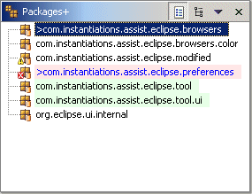

Packages+ ViewThe Packages+ view is just like the standard Java Browsing Packages view except that it has been enhanced with COLOR. In addition to color highlighting, the Packages+ view can switch between flat mode and tree mode.  By default, modified packages are shown in blue and packages with errors are shown with a light red background. Options are provided via a preference page to set various foreground and background colors. |